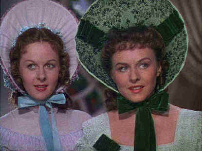

Universal/1942/124m//FS 1.33
 |
Two New York girls dressed for DeMille ©Universal |
Once back in
Charleston, old Commodore Devereaux rakes Stuart over the coals for losing his ship.
Meanwhile, Loxi has proceeded to Charleston to plead Jack Stuart’s case as the new
Southern Cross, the fleet’s flagship steam vessel to Steve Tolliver, Devereaux’s
heir apparent. Toilliver falls head over heels for Loxi, Stuart and Tolliver battle over
the beauty and before DeMille is through telling his tale of the sea, there’s dirty
doings at sea, a hokey trial and a battle with a giant squid. The melodrama is as powerful
as the rough seas.
Starring the earthly Paulette Godard as Loxi Claiborne, with some
girl support from Susan Hayward(These two native New Yorkers play Southern ladies with
sass: That’s Hollywood for you!), Reap the Wild Wind loads up lots of DeMille
marquee production oomph. The men are cast to type, though it’s one of the few times
you’ll John Wayne playing the heavy—well, semi heavy. Ray Milland does some good
work as Steve Tolliver, while Wayne’s crack sea captain Jack Stuart is convincingly
rugged. Godard flits and flirts between the two principal guys before Wayne makes a sudden
turn to the dark side and disappoints the lovely lady. Raymond Massey’s deep bass
voice delivers the bulk of bad guy lines and Robert Preston brings his usual screen
enthusiasm as Massey’s son.
Oh, man, that 3-strip Technicolor can produce some luscious
color. Check out the parrot in an early scene: Absolutely magnificent! Reap the Wild
Wind appear to be part of a new Universal DVD strategy of releasing a vintage classic,
a popular seventies film, and batch of newer films with each wave of monthly DVD released.
Happily, the three-strip Technicolor elements for Reap the Wild Wind are in
excellent condition. There are very few registration problems, which plagued the recent
Gone with the Wind DVD. There are some bits of dirt and scratches on the transfer
elements, but they never reduce effectiveness of the transfer. Sharp images, stable colors
and vivid contrast all make for a rousing DVD experience. The mono sound is clean and
serviceable.